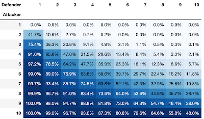
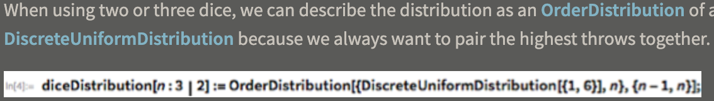

successExact :: Battlefield -> Probability
successExact (Battlefield _ 0) = 1
successExact (Battlefield 1 _) = 0
successExact b =
case M.lookup (maxTroops b) pMap of
Nothing -> 0
Just ps -> agg $ map update $ filter (not . aLoses b) ps
where update (p, losses) = (p, updateField b losses)
agg :: [(Probability, Battlefield)] -> Probability
agg pairs = foldr f 0 pairs
where f (p, b) accP = accP + (p * successExact b)

A: 3 B: 3 | Exact: 20.61% | Exact: 692225 % 3359232
A: 3 B: 4 | Exact: 9.13% | Exact: 5520775 % 60466176

https://blog.wolfram.com/2017/11/20/how-to-win-at-risk-exact-probabilities/